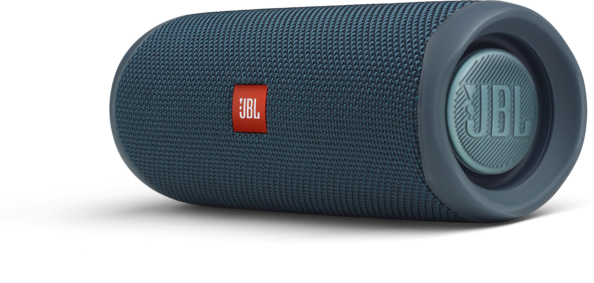

JBL Flip 5
$119.99
Tipo: Altavoz Bluetooth portátil
Autonomía: Hasta 12 horas de batería
Conectividad: Bluetooth 4.2
Características: Resistente al agua, Sonido potente
El JBL Flip 5 ofrece un sonido impresionante y una durabilidad destacada, perfecto para escuchar música en cualquier lugar.
Volver a la tienda Comprar